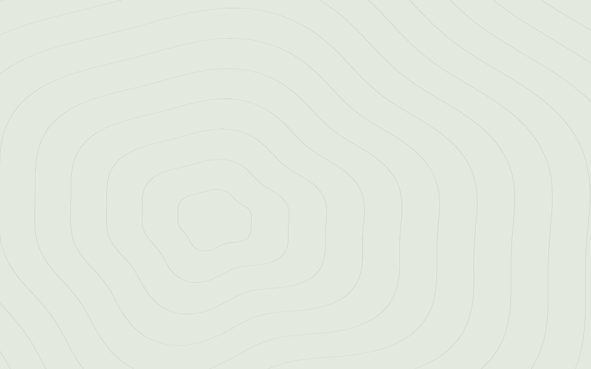

담화재 — 맑은 물가의 한옥 스테이



淡和齋
Story
담화재는 서둘러 지나치는 길 위의 집이 아니라,
천천히 머물러도 좋은 마당입니다.
물소리를 따라 걷다 문득 쉬어 가는 곳.
따뜻한 물에 몸을 담그고, 차를 우려
오늘의 이야기를 나누는 시간.
담화재는
무언가를 이루는 곳이 아니라
마음을 맑게 비우는 쉼의 자리입니다.
SPECIAL IN DAMHWAJAE
객실 미리보기


Where Mountains Rest
& Waters Run Clear
이 골짜기에는 오래전부터 물길을 따라
사람들이 오가던 작은 길이 있었습니다.
장에 가던 이도, 먼 길을 떠나던 이도
이 물가에서 잠시 발을 멈추었습니다.
짐을 내려놓고 목을 축이며
다시 걸을 힘을 얻던 자리였습니다. 담화재는 그 물가에 자리합니다.
무언가를 서둘러 이루기보다,
잠시 멈추어 쉬어도 좋은 집입니다. 물소리를 따라 걷다
문득 쉬어 가는 곳. 몸을 데우고, 차를 우리고, 이야기를 나누며
나만의 속도를 다시 찾는 시간.
담화재는 마음을 맑게 비우는
쉼의 자리입니다.
사람들이 오가던 작은 길이 있었습니다.
장에 가던 이도, 먼 길을 떠나던 이도
이 물가에서 잠시 발을 멈추었습니다.
짐을 내려놓고 목을 축이며
다시 걸을 힘을 얻던 자리였습니다. 담화재는 그 물가에 자리합니다.
무언가를 서둘러 이루기보다,
잠시 멈추어 쉬어도 좋은 집입니다. 물소리를 따라 걷다
문득 쉬어 가는 곳. 몸을 데우고, 차를 우리고, 이야기를 나누며
나만의 속도를 다시 찾는 시간.
담화재는 마음을 맑게 비우는
쉼의 자리입니다.
This is not a house for hurrying past;
it is a place where a pause is always welcome.
A quiet stop by the water on a long road. A time to warm your body, pour a cup of tea,
share a story, and find your own pace again. Damhwajae is not a place to achieve.
It is a place to rest and clear the mind.
it is a place where a pause is always welcome.
A quiet stop by the water on a long road. A time to warm your body, pour a cup of tea,
share a story, and find your own pace again. Damhwajae is not a place to achieve.
It is a place to rest and clear the mind.